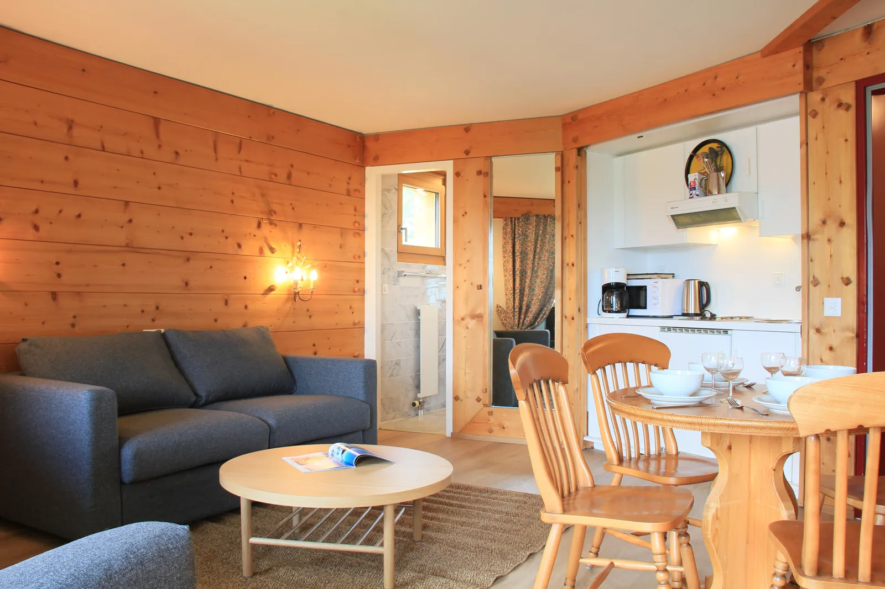

Los hoteles de Villars se llenan enseguida los fines de semana escolares, y una habitación se queda pequeña en cuanto llega un adolescente con sus amigos. Le Bristol A46 es un apartamento de un dormitorio para hasta 4 personas, con dos baños, dos balcones, cocina americana y piscina cubierta climatizada en el edificio. Una base tranquila donde la familia tiene espacio, con la oficina local de Interhome en Villars a pocos pasos por si necesitas algo.

De un vistazo
- Para 4: dormitorio con dos camas y sofá cama doble
- 2 baños, 2 balcones
- Piscina cubierta climatizada, ascensor, guardaesquís
- Wi-Fi, cocina americana con set de fondue y raclette
- A 500 m del pueblo y la estación de Villars
Dónde está respecto a Aiglon
El campus de Aiglon College está en la Avenue Centrale 61, en Chesières, el pueblo vecino justo colina abajo de Villars. Le Bristol está más arriba en la misma calle, en la Avenue Centrale 164, en Villars. Son unos 1,5 km: pocos minutos en coche o en el autobús local, que para justo al lado del colegio (parada: Chesières – Aiglon College).
Así estás lo bastante cerca para pasarte a ver un partido, un concierto o comer algo rápido, alojado en pleno Villars, cerca de sus tiendas, restaurantes y la estación.
Pensado para visitas al colegio
Inicio del trimestre
Instala a tu hijo en su residencia y vuelve a un piso donde deshacer las maletas, cocinar y descansar.
Fines de semana de salida (exeat)
Sitio para tu hijo y un amigo en el sofá cama, desayuno a tu ritmo y piscina en el edificio.
Fines de semana de padres y conciertos
Quédate unas noches sin pagar cada comida en un hotel.
Graduación
Celébralo cenando en el balcón, con el valle a tus pies.
Cómo llegar a Villars
- Desde el aeropuerto de Ginebra en tren: hay trenes directos que bordean el lago Lemán hasta Bex; desde allí, el pequeño tren de montaña sube a Villars. Calcula unas 2 horas.
- En coche: aproximadamente 1 hora y 30 minutos desde Ginebra, saliendo de la autopista en Aigle o Bex. En invierno, comprueba si necesitas cadenas.
- Desde Zúrich: calcula unas 3 horas en tren.


Preguntas frecuentes de las familias
¿A qué distancia está el apartamento de Aiglon College?
A unos 1,5 km por la Avenue Centrale, la calle principal que atraviesa Chesières y Villars. Son pocos minutos en coche, o puedes coger el autobús local, que para junto al colegio.
¿Cuántas personas pueden alojarse?
Hasta 4: dos camas individuales en el dormitorio y un sofá cama doble en el salón. Hay dos baños.
¿Se puede llegar en tren?
Sí. El apartamento está a unos 500 m de la estación de Villars y, desde el aeropuerto de Ginebra, el viaje en tren dura unas 2 horas.
¿Cuándo conviene reservar para los exeats y la graduación?
En cuanto el colegio publique su calendario. Las fechas de inicio y fin de trimestre, los exeats y la graduación son las primeras en agotarse en Villars, sobre todo en febrero, en plena temporada de esquí.
¿Quién gestiona la reserva?
Interhome, la empresa de alquiler vacacional, gestiona la reserva y el pago. Su oficina local en Villars, en la Avenue Centrale, se encarga de las llaves, la limpieza y cualquier ayuda que necesites durante tu estancia.
Le Bristol A46 es un apartamento de propiedad privada que se alquila a través de Interhome. No tenemos ninguna relación con Aiglon College. Las distancias y los tiempos de viaje son aproximados; consulta los horarios y el calendario del colegio antes de viajar.